Coupled Viscoelasticity and Single Phase Flow
A more complex case is when the constitutive relation is given by the viscoelasticity. We consider the same governing equation as the linear elasticity case
\[\begin{align}
\mathrm{div}\sigma(u) - b \nabla p &= 0 \tag{1}\\
\frac{1}{M} \frac{\partial p}{\partial t} + b\frac{\partial \varepsilon_v(u)}{\partial t} - \nabla\cdot\left(\frac{k}{B_f\mu}\nabla p\right) &= f(x,t)
\end{align}\]
with boundary conditions
\[\begin{aligned}
\sigma n = 0,\quad x\in \Gamma_{N}^u, \qquad u=0, \quad x\in \Gamma_D^u\\
-\frac{k}{B_f\mu}\frac{\partial p}{\partial n} = 0,\quad x\in \Gamma_{N}^p, \qquad p=g, \quad x\in \Gamma_D^p
\end{aligned}\]
and the initial condition
\[p(x,0) = p_0,\ u(x,0) =0,\ x\in \Omega\]
The only difference is that the consitutive relation is given by the Maxwell material equation, which has the following form in the discretization
\[\sigma^{n+1} = H \varepsilon^{n+1} + S \sigma^n - H\varepsilon^n\]
The discretization for Eq. (1) is
\[\int_\Omega H \varepsilon^{n+1} : \delta \varepsilon \;\mathrm{d}x- \int_\Omega b p \delta u \;\mathrm{d}x = \int_{\partial \Omega} \mathbf{t} \;\mathrm{d}s + \int_{\Omega} H\varepsilon^n : \delta\varepsilon \;\mathrm{d} x - \int_\Omega S\sigma^n : \delta \varepsilon \;\mathrm{d} x\]
Numerical Results
We run the results with three different viscosity $\eta = 1/10000, 1$, and $10$. We have the following results
| Description | $\eta=1/10000$ | $\eta=1$ | $\eta=10$ |
|---|---|---|---|
| Pressure | 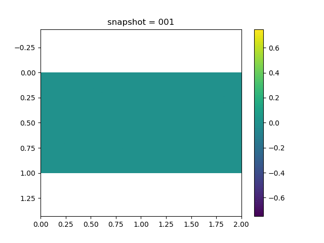 | ||
| $\sigma_{xx}$ | 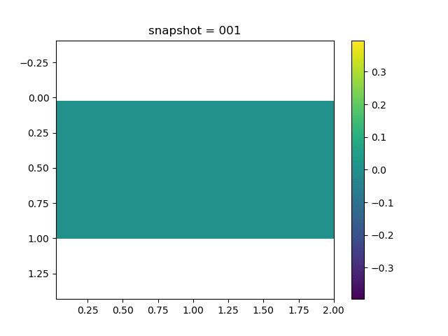 | ||
| $\sigma_{xy}$ | 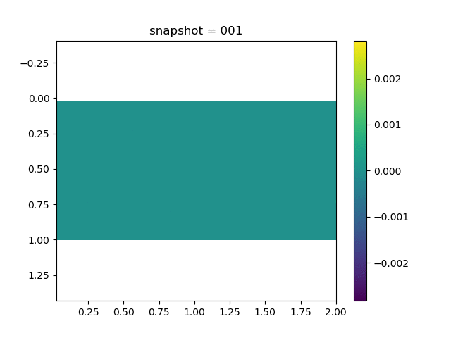 | 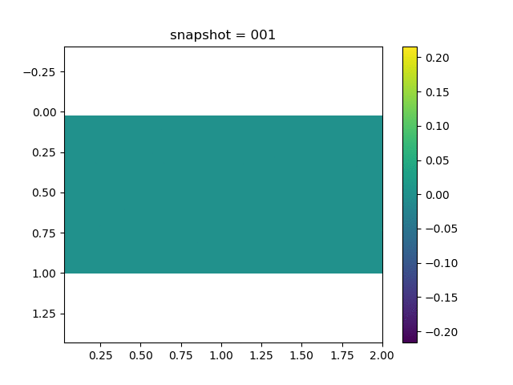 | |
| $\sigma_{yy}$ | |||
| $u$ | 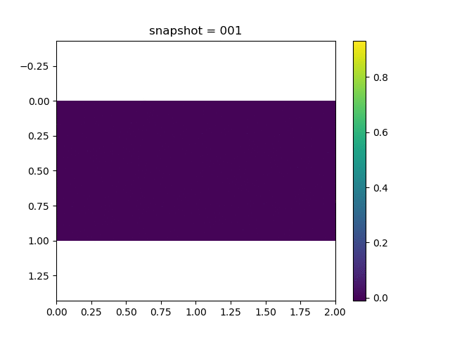 | 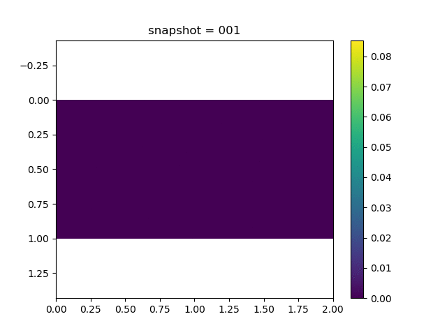 | |
| $v$ | |||
| $\sigma_{xx}$ at the center point | 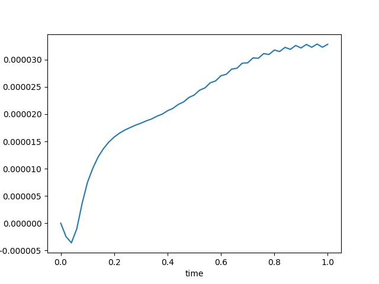 | 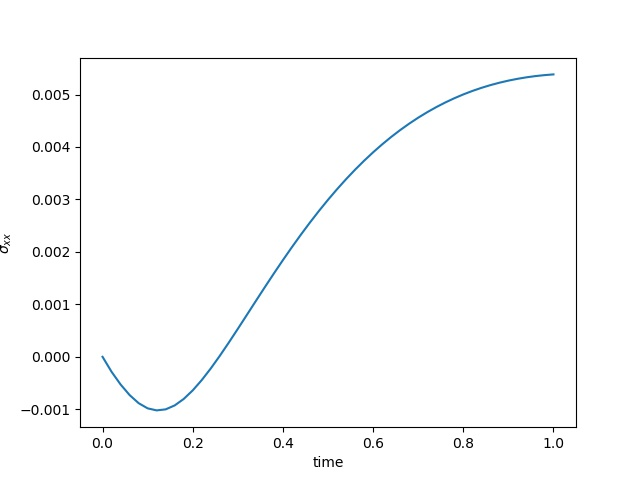 | 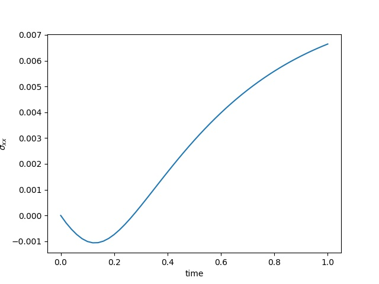 |
| $u$ at the center point | 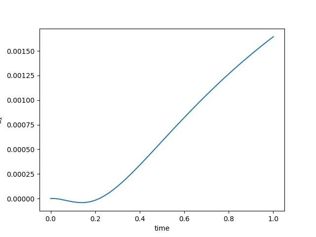 | 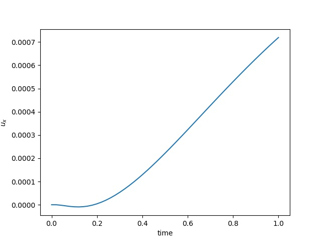 | 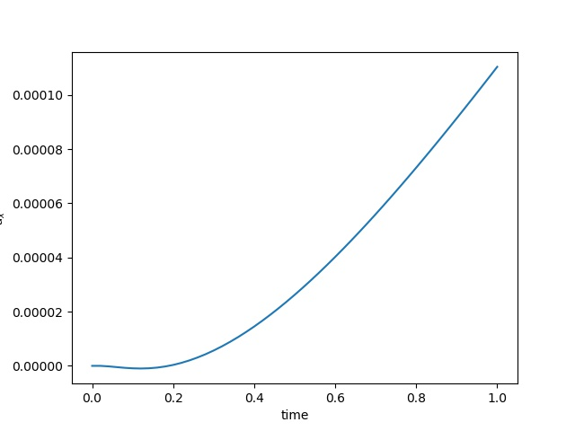 |
| $\varepsilon_{xx}$ at the center point | 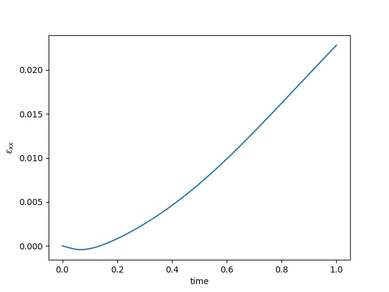 |  |
Simulation Codes
using Revise
using PoreFlow
using PyCall
using LinearAlgebra
using ADCME
using MAT
using PyPlot
np = pyimport("numpy")
# Domain information
NT = 50
Δt = 1/NT
n = 20
m = 2*n
h = 1.0/n
bdnode = Int64[]
for i = 1:m+1
for j = 1:n+1
if i==1 || i==m+1 || j==1|| j==n+1
push!(bdnode, (j-1)*(m+1)+i)
end
end
end
is_training = false
b = 1.0
invη = 1.0
if length(ARGS)==1
global invη = parse(Float64, ARGS[1])
end
λ = constant(2.0)
μ = constant(0.5)
invη = constant(invη)
iS = tensor(
[1+2/3*μ*Δt*invη -1/3*μ*Δt*invη 0.0
-1/3*μ*Δt*invη 1+2/3*μ*Δt*invη 0.0
0.0 0.0 1+μ*Δt*invη]
)
S = inv(iS)
H = S * tensor([
2μ+λ λ 0.0
λ 2μ+λ 0.0
0.0 0.0 μ
])
Q = SparseTensor(compute_fvm_tpfa_matrix(m, n, h))
K = compute_fem_stiffness_matrix(H, m, n, h)
L = SparseTensor(compute_interaction_matrix(m, n, h))
M = SparseTensor(compute_fvm_mass_matrix(m, n, h))
A = [K -b*L'
b*L/Δt 1/Δt*M-Q]
A, Abd = fem_impose_coupled_Dirichlet_boundary_condition(A, bdnode, m, n, h)
# error()
U = zeros(m*n+2(m+1)*(n+1), NT+1)
x = Float64[]; y = Float64[]
for j = 1:n+1
for i = 1:m+1
push!(x, (i-1)*h)
push!(y, (j-1)*h)
end
end
injection = (div(n,2)-1)*m + 3
production = (div(n,2)-1)*m + m-3
function condition(i, tas...)
i<=NT
end
function body(i, tas...)
ta_u, ta_ε, ta_σ = tas
u = read(ta_u, i)
σ0 = read(ta_σ, i)
ε0 = read(ta_ε, i)
rhs1 = compute_fem_viscoelasticity_strain_energy_term(ε0, σ0, S, H, m, n, h)
rhs2 = zeros(m*n)
rhs2[injection] += 1.0
rhs2[production] -= 1.0
rhs2 += b*L*u[1:2(m+1)*(n+1)]/Δt +
M * u[2(m+1)*(n+1)+1:end]/Δt
rhs = [rhs1;rhs2]
o = A\rhs
ε = eval_strain_on_gauss_pts(o, m, n, h)
σ = σ0*S + (ε - ε0)*H
ta_u = write(ta_u, i+1, o)
ta_ε = write(ta_ε, i+1, ε)
ta_σ = write(ta_σ, i+1, σ)
i+1, ta_u, ta_ε, ta_σ
end
i = constant(1, dtype=Int32)
ta_u = TensorArray(NT+1); ta_u = write(ta_u, 1, constant(zeros(2(m+1)*(n+1)+m*n)))
ta_ε = TensorArray(NT+1); ta_ε = write(ta_ε, 1, constant(zeros(4*m*n, 3)))
ta_σ = TensorArray(NT+1); ta_σ = write(ta_σ, 1, constant(zeros(4*m*n, 3)))
_, u_out, ε_out, σ_out = while_loop(condition, body, [i, ta_u, ta_ε, ta_σ])
u_out = stack(u_out)
u_out.set_shape((NT+1, size(u_out,2)))
σ_out = stack(σ_out)
ε_out = stack(ε_out)
upper_idx = Int64[]
for i = 1:m+1
push!(upper_idx, (div(n,3)-1)*(m+1)+i)
push!(upper_idx, (div(n,3)-1)*(m+1)+i + (m+1)*(n+1))
end
for i = 1:m
push!(upper_idx, (div(n,3)-1)*m+i+2(m+1)*(n+1))
end
sess = Session(); init(sess)
U, Sigma, Varepsilon, ev = run(sess, [u_out,σ_out,ε_out, invη])
visualize_displacement(U'|>Array, m, n, h, name="_visco$ev")
visualize_pressure(U'|>Array, m, n, h, name="_visco$ev")
visualize_scattered_displacement(U'|>Array, m, n, h, name="_visco$ev")
visualize_stress(Sigma[:,:,1]'|>Array, m, n, h, name="xx_visco$ev")
visualize_stress(Sigma[:,:,2]'|>Array, m, n, h, name="yy_visco$ev")
visualize_stress(Sigma[:,:,3]'|>Array, m, n, h, name="xy_visco$ev")
idx = m÷2 + (n÷2)*m
close("all")
plot(LinRange(0,1.0, NT+1),Sigma[:,4*(idx-1)+1,1])
xlabel("time")
ylabel("\$\\sigma_{xx}\$")
savefig("sigmaxx$ev.jpeg")
close("all")
plot(LinRange(0,1.0, NT+1),Varepsilon[:,4*(idx-1)+1,1])
xlabel("time")
ylabel("\$\\varepsilon_{xx}\$")
savefig("varepsilonxx$ev.jpeg")
idx = m÷2 + (n÷2)*(m+1)
close("all")
plot(LinRange(0,1.0, NT+1),U[:,4*(idx-1)+1])
xlabel("time")
ylabel("\$u_x\$")
savefig("ux$ev.jpeg")Inverse Modeling
In the inverse modeling, we fix the bottom boundary and impose no traction condition on all other three boundaries.
| Pressure | $\sigma_{xx}$ | $\sigma_{yy}$ | $\sigma_{xy}$ | $u$ | $v$ |
|---|---|---|---|---|---|
 |  |  |  |  |  |
| Displacement | $\sigma_{xx}$ at the center point | $\varepsilon_{xx}$ at the center point | $u$ at the center point |
|---|---|---|---|
 |  |  |  |